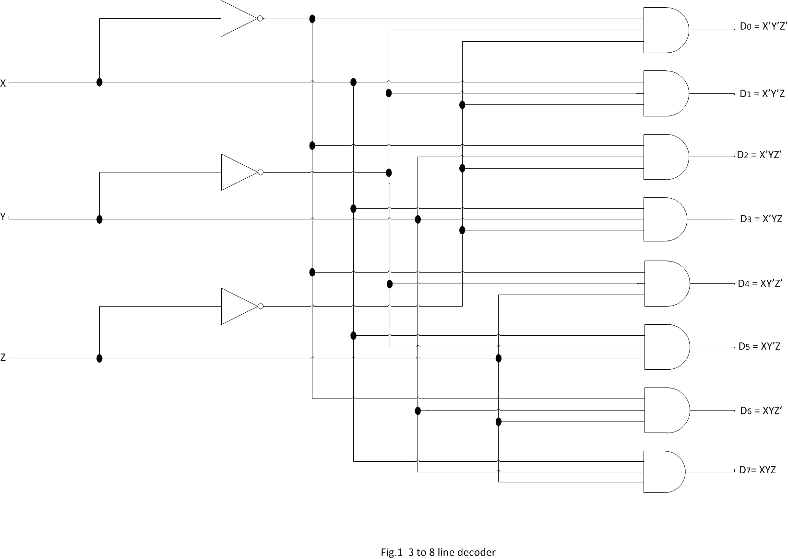
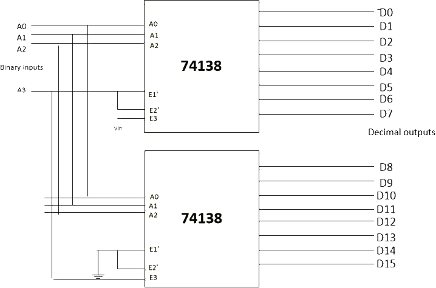

Theory
Decoders
A decoder is a combinational circuit that converts binary information from n input lines to a maximum of 2n unique output lines. If the n-bit coded information has unused or ‘don’t care’ combinations, the decoder may have fewer than 2n output lines. As an illustration, if there are three input lines, it can have a maximum of eight unique output lines. If, in the three-bit input code, the only used three-bit combinations are 000, 001, 010, 100, 110 and 111 (011 and 101 being either unused or don’t care combinations), then this decoder will have only six output lines. In general, if n and m are the numbers of input and output lines respectively, then m ≤ 2n. The decoders presented here are called n-to-m line decoders. The n inputs are decoded into m outputs, each representing one of the minterms of the n input variables. As an example, consider the three-to-eight-line decoder circuit of Fig. 1. The three inputs are decoded into eight outputs, each representing one of the minterms of the three input variables. The three inverters provide the complement of the inputs, and each one of the eight AND gates generate one of the minterms. A particular application of this decoder is binary-to-octal conversion. The input variables represent a binary number, and the outputs represent the eight digits of a number in the octal number system. However, a three-to-eight-line decoder can be used for decoding any three-bit code to provide eight outputs, one for each element of the code.
The operation of the decoder may be clarified by the truth table listed in Table 1. For each possible input combination, there are seven outputs that are equal to 0 and only one that is equal to 1. The output whose value is equal to 1 represents the minterm equivalent of the binary number currently available in the input lines.
| INPUT | OUTPUT | |||||||||
|---|---|---|---|---|---|---|---|---|---|---|
| A | B | C | D0 | D1 | D2 | D3 | D4 | D5 | D6 | D7 |
| 0 | 0 | 0 | 1 | 0 | 0 | 0 | 0 | 0 | 0 | 0 |
| 0 | 0 | 1 | 0 | 1 | 0 | 0 | 0 | 0 | 0 | 0 |
| 0 | 1 | 0 | 0 | 0 | 1 | 0 | 0 | 0 | 0 | 0 |
| 0 | 1 | 1 | 0 | 0 | 0 | 1 | 0 | 0 | 0 | 0 |
| 1 | 0 | 0 | 0 | 0 | 0 | 0 | 1 | 0 | 0 | 0 |
| 1 | 0 | 1 | 0 | 0 | 0 | 0 | 0 | 1 | 0 | 0 |
| 1 | 1 | 0 | 0 | 0 | 0 | 0 | 0 | 0 | 1 | 0 |
| 1 | 1 | 1 | 0 | 0 | 0 | 0 | 0 | 0 | 0 | 1 |
Fig. 2 shows the circuit representation of 2-to-4, 3-to-8 and 4-to-16 line decoders.
.png)
Combinational Logic Implementation
A decoder provides 2n minterms of n input variables. Each asserted output of the decoder is associated with a unique pattern of input bits. Since any Boolean function can be expressed in sum-of-minterms form, a decoder that generates the minterms of the function, together with an external OR gate that forms their logical sum, provides a hardware implementation of the function. In this way, any combinational circuit with n inputs and m outputs can be implemented with an n-to-2n-line decoder and m OR gates.
The procedure for implementing a combinational circuit by means of a decoder and OR gates requires that the Boolean function for the circuit be expressed as a sum of minterms. A decoder is then chosen that generates all the minterms of the input variables. The inputs to each OR gate are selected from the decoder outputs according to the list of minterms of each function. This procedure will be illustrated by an example that implements a full-adder circuit.
| INPUT | OUTPUT | |||
|---|---|---|---|---|
| A | B | Cin | Cout | D |
| 0 | 0 | 0 | 0 | 0 |
| 0 | 0 | 1 | 0 | 1 |
| 0 | 1 | 0 | 0 | 1 |
| 0 | 1 | 1 | 1 | 0 |
| 1 | 0 | 0 | 0 | 1 |
| 1 | 0 | 1 | 0 | 1 |
| 1 | 1 | 0 | 1 | 0 |
| 1 | 1 | 1 | 1 | 1 |
From the truth table of the full adder (Table 2), we obtain the functions for the combinational circuit in sum-of-minterms form:
S(x, y, z) = ∑(1,2, 4, 7)
C(x, y, z) = ∑(3, 5, 6, 7)
Since there are three inputs and a total of eight minterms, we need a three-to-eight- line decoder. The implementation is shown in Fig. 3. The decoder generates the eight minterms for x, y, and z. The OR gate for output S forms the logical sum of minterms 1,2, 4, and 7 The OR gate for output C forms the logical sum of minterms 3,5, 6, and 7
A function with a long list of minterms requires an OR gate with a large number of inputs. A function having a list of k minterms can be expressed in its complemented form F' with 2n – k minterms. If the number of minterms in the function is greater than 2n/2, then F' can be expressed with fewer minterms. In such a case, it is advantageous to use a NOR gate to sum the minterms of F'. The output of the NOR gate complements this sum and generates the normal output F. If NAND gates are used for the decoder, as in Fig. 4, then the external gates must be NAND gates instead of OR gates. This is because a two-level NAND gate circuit implements a sum-of- minterms function and is equivalent to a two-level AND-OR circuit.
Cascading Decoder Circuits
Decoders with enable inputs can be connected together to form a large decoder circuits. There can possibly be a situation where the desired number of input and output lines is not available in IC decoders. More than one of these devices of a given size may be used to construct a decoder that can handle a larger number of input and output lines. For instance, 3-to-8 line decoders can be used to construct 4-to-16 or 5-to-32 or even larger decoder circuits. The basic steps to be followed to carry out the design are as follows:
1. If n is the number of input lines in the available decoder and N is the number of input lines in the desired decoder, then the number of individual decoders required to construct the desired decoder circuit would be 2N−n.
2. Connect the less significant bits of the input lines of the desired decoder to the input lines of the available decoder.
3. The left-over bits of the input lines of the desired decoder circuit are used to enable or disable the
individual decoders.
4. The output lines of the individual decoders together constitute the output lines, with the outputs of the less significant decoder constituting the less significant output lines and those of the higher order
decoders constituting the more significant output lines.
4-to-16 Decoder from 3-to-8 Decoders
Fig. 5 shows the arrangement for using two 74138 (3-to-8 decoder ICs) to obtain a 4-to-16 decoder. The most significant input bit A3 is connected to E1’ on the upper decoder (for D0 through D7) and to E3 on the lower decoder (for D8 through D15). Thus, when A3 is LOW, the upper decoder is enabled and the lower decoder is disabled. The lower decoder outputs are all 0’s, and the upper eight outputs generate minterms 0000 to 0111.When A3 is HIGH, the enable conditions are reversed: the lower decoder generates minterms 1000 to 1111, while the outputs of the upper decoder are all 0’s. This example demonstrates the usefulness of enable inputs in decoders and other combinational logic components. In general, enable inputs are a convenient feature for interconnecting two or more standard components for the purpose of combining them into a similar function with more inputs and outputs.
Circuit Diagram of 4-to-16 decoder using 3-to-8 decoder IC is shown below.

Fig. 6 Circuit Diagram of 4-to-16 decoder
Table: 3 Truth table of 4-to-16 decoder
| INPUT | OUTPUT | ||||||||||||||||||
|---|---|---|---|---|---|---|---|---|---|---|---|---|---|---|---|---|---|---|---|
| A | B | C | D | D0 | D1 | D2 | D3 | D4 | D5 | D6 | D7 | D8 | D9 | D10 | D11 | D12 | D13 | D14 | D15 |
| 0 | 0 | 0 | 0 | 1 | 0 | 0 | 0 | 0 | 0 | 0 | 0 | 0 | 0 | 0 | 0 | 0 | 0 | 0 | 0 |
| 0 | 0 | 0 | 1 | 0 | 1 | 0 | 0 | 0 | 0 | 0 | 0 | 0 | 0 | 0 | 0 | 0 | 0 | 0 | 0 |
| 0 | 0 | 1 | 0 | 0 | 0 | 1 | 0 | 0 | 0 | 0 | 0 | 0 | 0 | 0 | 0 | 0 | 0 | 0 | 0 |
| 0 | 0 | 1 | 1 | 0 | 0 | 0 | 1 | 0 | 0 | 0 | 0 | 0 | 0 | 0 | 0 | 0 | 0 | 0 | 0 |
| 0 | 1 | 0 | 0 | 0 | 0 | 0 | 0 | 1 | 0 | 0 | 0 | 0 | 0 | 0 | 0 | 0 | 0 | 0 | 0 |
| 0 | 1 | 0 | 1 | 0 | 0 | 0 | 0 | 0 | 1 | 0 | 0 | 0 | 0 | 0 | 0 | 0 | 0 | 0 | 0 |
| 0 | 1 | 1 | 0 | 0 | 0 | 0 | 0 | 0 | 0 | 1 | 0 | 0 | 0 | 0 | 0 | 0 | 0 | 0 | 0 |
| 0 | 1 | 1 | 1 | 0 | 0 | 0 | 0 | 0 | 0 | 0 | 1 | 0 | 0 | 0 | 0 | 0 | 0 | 0 | 0 |
| 1 | 0 | 0 | 0 | 0 | 0 | 0 | 0 | 0 | 0 | 0 | 0 | 1 | 0 | 0 | 0 | 0 | 0 | 0 | 0 |
| 1 | 0 | 0 | 1 | 0 | 0 | 0 | 0 | 0 | 0 | 0 | 0 | 0 | 1 | 0 | 0 | 0 | 0 | 0 | 0 |
| 1 | 0 | 1 | 0 | 0 | 0 | 0 | 0 | 0 | 0 | 0 | 0 | 0 | 0 | 1 | 0 | 0 | 0 | 0 | 0 |
| 1 | 0 | 1 | 1 | 0 | 0 | 0 | 0 | 0 | 0 | 0 | 0 | 0 | 0 | 0 | 1 | 0 | 0 | 0 | 0 |
| 1 | 1 | 0 | 0 | 0 | 0 | 0 | 0 | 0 | 0 | 0 | 0 | 0 | 0 | 0 | 0 | 1 | 0 | 0 | 0 |
| 1 | 1 | 0 | 1 | 0 | 0 | 0 | 0 | 0 | 0 | 0 | 0 | 0 | 0 | 0 | 0 | 0 | 1 | 0 | 0 |
| 1 | 1 | 1 | 0 | 0 | 0 | 0 | 0 | 0 | 0 | 0 | 0 | 0 | 0 | 0 | 0 | 0 | 0 | 1 | 0 |
| 1 | 1 | 1 | 1 | 0 | 0 | 0 | 0 | 0 | 0 | 0 | 0 | 0 | 0 | 0 | 0 | 0 | 0 | 0 | 1 |
Decoder Applications
Decoders are used whenever an output or a group of outputs is to be activated only on the occurrence of a specific combination of input levels. These input levels are often provided by the outputs of a counter or register. When the decoder
inputs come from a counter that is being continually pulsed, the decoder outputs will be activated sequentially, and they can be used as tuning or sequencing signals to turn devices on or off at specific times.
Decoders are widely
used in memory systems of computers, where they respond to the address code input from the central processor to activate the memory storage location specified by the address code.
Decoder Uses
• In every wireless communication, data security is the main concern. The decoders are mainly designed to provide security for data communication by designing standard encryption and decryption algorithms.
• Decoders are used in audio
systems to convert analogue audio into digital data.
• Used as a decompressor to convert compressed data like images and videos into decompressed form.
• Decoders use electronic circuits which convert computer instructions
into CPU control signals.
IC 74138
IC 74138 (or74LS138) is a Logical Decoder IC. It also has a demultiplexing facility. It is a 3 to 8 decoder IC. The internal circuit of this IC is made of high-speed Schottky barrier diode.
IC 74138
IC 74LS138 has a total of sixteen pins as shown below in the pin diagram (Fig. 7)
1. The pin no. 8 and 16 are the ground and Vcc respectively for the power input.
2. There are a total of three input pins(pin no. 1, 2 and 3). They are denoted by A0, A1 and A2. So IC 74LS138 can take
three binary input signals.
3. There are three enable input pins E1, E2, E3(pin no. 4, 5, 6). E1 and E2 are the active LOW pins that mean when low signals are applied to those
pins they will be active.
4. Pin no. 7 and 9 to 15 are the output pins.
Features of IC 74138
1. It is very fast and high-speed IC.
2. It consumes very low power because it consists of low power Schottky diodes.
3. It has a demultiplexing facility.
4. It has a very short propagation delay.
5. Appropriate operating
Temperature (0 to 70 0C).
IC 74138 Applications
1. It is a decoder IC, the main application is to decode the digital signal.
2. It is used in digital memory circuits and data routing applications.
3. It is also used for demultiplexing of digital signals.
IC 7404
NOT gate is commonly used to invert a logical HIGH to logical LOW or logical LOW to logical HIGH. Each NOT gate has one input and one output. Commonly used NOT gate IC is 7404. Pinout diagram of 7404 is given below (Fig. 8). Each 7404 has 6 NOT gates arranged as shown in the following figure. 14th pin is the VCC and 7th pin is the Ground.